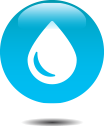

<ion-header >
  <ion-toolbar color = "primary">
    <ion-title class="ion-text-center">
      SISTEMA DE RIEGO AUTOMATIZADO
    </ion-title>
  </ion-toolbar>
</ion-header>

<ion-content [fullscreen]="true"> 
  <ion-list>
    <ion-item *ngFor="let elemento of dispositivos"  routerLink="/dispositivo/{{elemento.dispositivoId}}" routerDirection="root">
        <ion-avatar slot="start">
            
            <!--<ion-icon size="large" name="leaf-outline"></ion-icon>-->
        </ion-avatar>
        <ion-label>
            <h2>{{elemento.dispositivoId}} - {{elemento.nombre}}</h2>
            <h3>
                <ion-icon name="location-outline"></ion-icon> {{elemento.ubicacion}}</h3>
        </ion-label>
    </ion-item>
</ion-list>
</ion-content>

<ion-footer>
  <ion-toolbar color = "primary">
    <ion-title class="ion-text-right">
      TRABAJO FINAL</ion-title>
    <ion-title size = "small" class="ion-text-right">
      Asignatura: DAM</ion-title>
    <ion-title size = "small" class="ion-text-right">
      Alumno: Diego Villarraza</ion-title>
    <ion-title size = "small" class="ion-text-right">
      FIUBA - 2020</ion-title>
  </ion-toolbar>
</ion-footer>